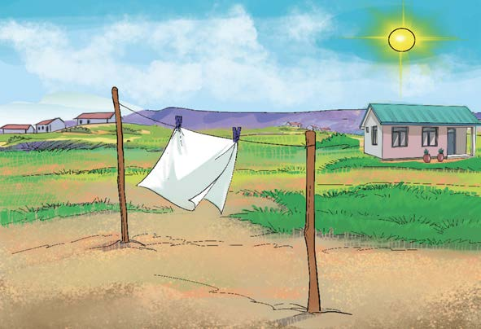

Maelezo ya picha: Kitambaa kimetundikwa kwenye kamba kikikauka juani. Jua linatoa joto la kukausha nguo.
Kielelezo namba 4: kukausha nguo kwenye jua.
Matokeo
Kitambaa kikavu kilipowekwa katika maji kililowa. Kitambaa kilicholowa kilipoanikwa juani kilikauka kutokana na joto lililotokana na miale ya jua.
Hitimisho
Katika jaribio hilo tumejifunza kwamba kitambaa kibichi kilikauka kutokana na joto la jua. Joto la jua husafiri kufikia vitu kupitia nafasi tupu kwa njia ya mnunurisho.
Katika majaribio uliyofanya, umegundua joto husafiri kwa njia kuu tatu ambazo ni mpitisho, mnunurisho na msafara.
(a)
Mpitisho ni usafirishaji wa nishati ya joto katika vitu vigumu kama vile metali.
(b)
Msafara ni usafirishaji wa nishati ya joto katika vimiminika kama vile vioevu na gesi.